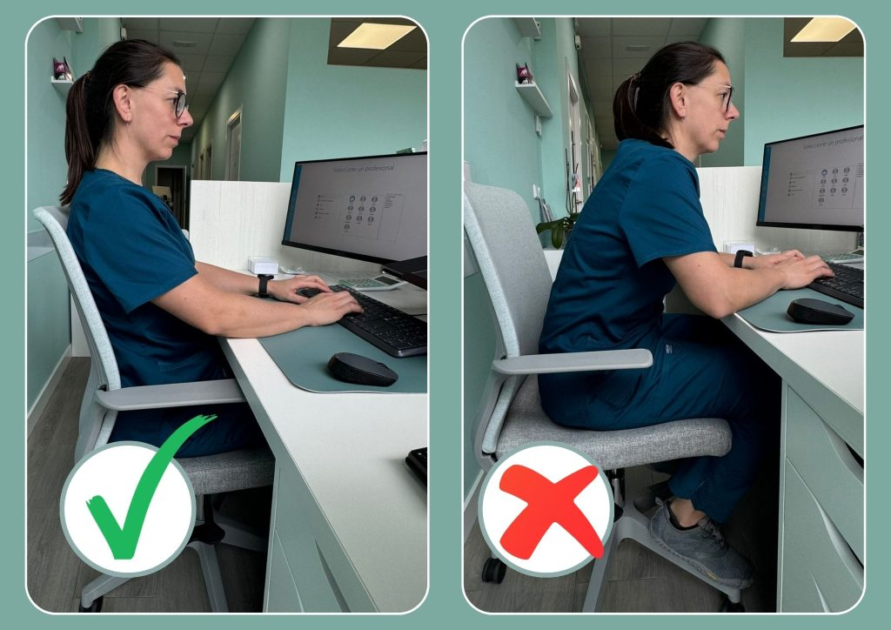

02 Hábitos del Programador
Rutina Saludable en el Escritorio
Estar muchas horas frente al IDE puede pasar factura. Incorporá estos hábitos clave en tu día a día para rendir más sin descuidar tu cuerpo:
- ✓ Cuidado Visual: Configurá el modo oscuro y ajustá el brillo de la pantalla según la luz ambiental de tu habitación para evitar la vista cansada.
- ✓ Regla del 90°: Chequeá que tu espalda esté pegada por completo al respaldo y que tus rodillas y codos mantengan un ángulo recto.
- ✓ Posición de Manos: Evitá que las muñecas queden suspendidas en el aire al usar el teclado o el mouse; apoyá siempre los antebrazos.
